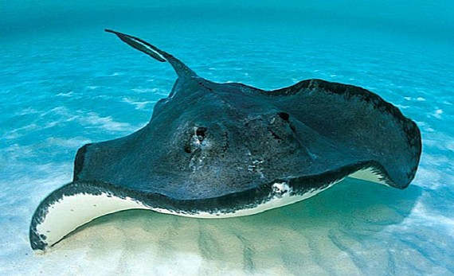
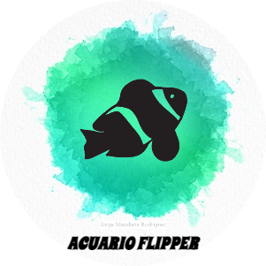

¡Cuidado! Estos son los peces mas venenosos del mundo
-
Globo
Los biólogos creen que el pez globo desarrolló su famosa habilidad para inflarse debido a que su estilo para nadar es lento y torpe. Eso los hace vulnerables frente a los depredadores. En lugar de escapar, el pez globo utilizar su elástico estómago muy elástica y su capacidad de ingerir rápidamente grandes cantidades de agua (e incluso de aire si es necesario) para que se convierta en una bola prácticamente increíble que dobla varias veces su tamaño normal. -
Roca
Es un pez de cuerpo grueso y redondeado con una cabeza y boca muy grande. Las comisuras de la boca se dirigen hacia abajo, otorgándole una apariencia de enfado. Los ojos del pez piedra son pequeños y la piel está cubierta por una armadura de verrugas protectoras. El color de su piel es generalmente gris o marrón, con ciertas tonalidades dispersas en rojo, naranja y amarillo. -
León
Este pez caza a sus presas, principalmente peces y camarones, gracias a su camuflaje y a sus rapidísimos reflejos. La picadura del pez león es extremadamente dolorosa para los humanos y puede provocar náuseas y problemas respiratorios, pero normalmente no es mortal. El pez león, también llamado pez escorpión, es originario de los arrecifes y grietas del Indo-Pacífico, aunque se ha extendido a océanos cálidos de todo el mundo. -
Cirujano

Los cirujanos azules son pequeños peces que viven en arrecifes de coral en el Indo-Pacífico. Los animales son fáciles de divisar gracias a su coloración vibrante característica que consta de colores azul real y amarillo canario. Los notorios patrones de color del cirujano azul no son tan fiables como crees. Por ejemplo, la coloración de los cirujanos azules jóvenes es amarilla brillante. Y, de adultos, el color de los peces cambia a azul más oscuro y violetas como señal de estrés. -
Raya

Los peces raya son un tipo de pez que cuentan con unos cuerpos lisos y especialmente planos, así como con unas colas muy largas y también filosas. Este tipo de cuerpo plano le permite a este animal el poder escavar en la arena del mar para esconderse cuando quiere mantenerse a salvo de depredadores o de otros peligros. Además, con su especial cola también se suele defender. -
Escorpión
El pez escorpión es un pez destinado a moverse en entornos de agua salada, mayormente en las profundidades, lo que le permite estar en el anonimato. Aunque muchos amantes de estos peces quieren tenerles en otros entornos, lo cierto es que no existe un pez escorpión de agua dulce. Generalmente suele ser una criatura tranquila durante el día mientras que en la noche se mueve más. De igual manera se recomienda estar alejado de él, ya que se considera una especie peligrosa, carnívora y territorial. -
Abisal
El pez abisal habita profundidades de unos 4000 metros. Tiene igualmente un cuerpo poco hidrodinámico y la piel flácida, con una capacidad asombrosa de permanecer quietos entre dos aguas (otros peces se hundirían si dejaran de nadar). Esto evita que los detecten posibles depredadores. Poseen un órgano bioluminoso en el extremo de un apéndice sobre la cabeza, que emplean para atraer presas a sus fauces. Tienen un tamaño máximo de 20 cm.

Acuario Flipper